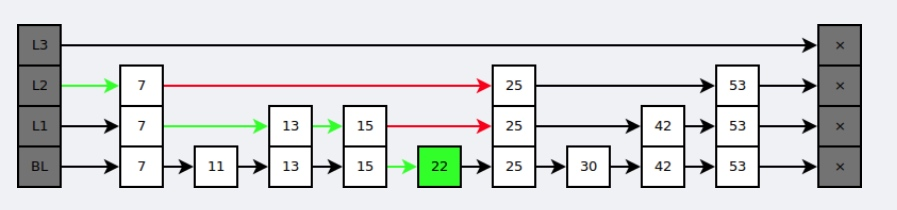

SDS
Redis 构建了一种名为简单动态字符串（simple dynamic string，SDS）的抽象类型。
SDS用一个结构体表示，有三个成员：字符串长度、未使用字节的数量、char 数组
好处：
- 可以 O(1) 时间复杂度获取字符串长度
- 动态扩容，每次修改 SDS，Redis 会自动扩展至执行修改所需的大小，然后才执行实际的修改操作，所以使用 SDS 既不需要手动修改 SDS 的空间大小，也不会出现前面所说的缓冲区溢出问题。
- 空间预分配，空间扩展的时候，会分配额外的未使用空间，减少连续执行字符串增长操作所需的内存重分配次数。（分配策略：SDS长度小于1M时，未分配空间和长度相同，大于1M时，多分配1M空间。）
字典
结构
dict 包含两个 hash 表（dictht），以及 rehashidx，方便进行 rehash；
dictht 包含一个 dictEntry 数组，还有哈希表大小 size；
dictEntry 封装了一个 k-v，以及 next 指针，用于拉链法解决哈希冲突。
rehash
渐进式 rehash，通过记录 rehashidx，从 0 开始，每执行一次 rehash 递增，在 rehash 期间，每对字典进行添加、删除、查找或更新操作，都会执行一次渐进式 rehash。
跳跃表
有序集合的底层实现之一。
基于多指针有序链表实现。查找时从上层指针开始查找，找到区间后再到下一层去查找。

如何构建？
当原始链表中元素数量足够大，且抽取足够随机的话，我们得到的索引是均匀的。随机选 n/2 个元素做为一级索引、随机选 n/4 个元素做为二级索引、随机选 n/8 个元素做为三级索引，依次类推，一直到最顶层索引。
在每次新插入元素的时候，尽量让该元素有 1/2 的几率建立一级索引、1/4 的几率建立二级索引、1/8 的几率建立三级索引，以此类推，当建立二级索引的时候，同时也会建立一级索引；当建立三级索引时，同时也会建立一级、二级索引。
链表
list 的底层实现之一。
链表节点被封装成 listNode，有 prev、next、value 三个成员。
链表节点使用 list 封装，有 head、tail、len 等成员。